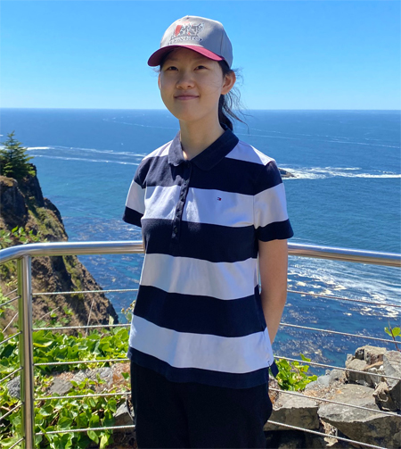

|  |
Feng Liu
Portland State University and Adobe Research Email: fliu@pdx.edu Email: fliu.psu@gmail.com for non-PSU related inquiries Phone: (503) 725-3221 Fax: (503) 725-3211 Office: FAB 120-08 |
| I hold joint positions at Portland State University as a Professor in Computer Science and at Adobe Research as a Principal Research Scientist. I received my PhD in Computer Science from the University of Wisconsin-Madison in 2010. I was a Visiting Research Scientist at Meta Reality Labs and Google Research. My research interests include computer vision, computer graphics, applied machine learning, multimedia, and human computer interaction. | |
|
Teaching CS 447/547 Computer Graphics CS 410/510 Introduction to Computer Vision CS 410/510 Computational Photography |
|